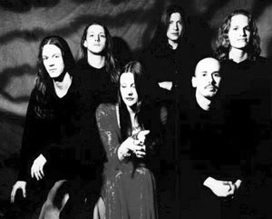
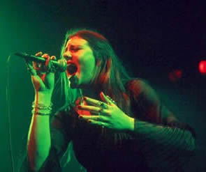

A banda holandesa After Forever teve seu início
de carreira muito semelhante ao de tantas bandas de Rock. O fator
que fazia deles um grupo especial, foi a proposta musical predominante
em seus trabalhos.
Tocando covers de seus artistas preferidos, como
Iron Maiden e The Cult, a banda surgiu em meados de 1995 com o
nome de Apocalyps. Porém, os jovens integrantes
consideravam este nome comercial e superficial. A expressão
After Forever, traduzia com fidelidade a proposta musical
profunda e lírica da banda. Este foi o nome adotado. A
partir desse momento, os ensaios foram voltados para as próprias
composições e o objetivo de lançar um trabalho
autêntico começava a se concretizar.
Em
meados de 1997, a vocalista Floor Jansen une-se a banda e completa
a formação que gravou a primeira demo. Em 1999,
várias gravadoras fizeram propostas para lançar
o trabalho dos talentosos e jovens músicos. A conceituada
Transmission Records venceu a concorrência.
Hans Pieters e Dennis Leidelmeijer conduziram
e produziram as gravações de Prison of Desire
no estúdio Excess, em Rotterdam. Os coroais foram feitos
no RS 29 com o produtor Oscar Holleman, que já havia trabalhado
com Ayreon e The Gathering.
O resultado foi ansiosamente aguardado pelos integrantes.
As cinco músicas de estréia traziam o soprano indefectível
de Floor, aliado às guitarras e vocais urrantes de Mark
Jansen e Sander Gommans. O instrumental agressivo da banda trazia
ainda um coral profissional de cinco vozes e arranjos clássicos.
A produção do CD de estréia era de uma qualidade
e imponência poucas vezes vista no cenário fonográfico
da Holanda. Sharon den Adel (integrante do Within
Temptation), dividiu os vocais da faixa Beyond Me
com Floor. A atmosfera sombria das músicas ressuscitava
a melancolia medieval. Prison of Desire foi muito bem recebido
pela crítica européia. No Brasil, o resultado também
foi muito bom; sendo aclamado pelos leitores das principais revistas
do gênero.
Em 2002 é lançado Decipher,
segundo álbum oficial da banda. Neste disco, fica evidente
a evolução e o amadurecimento musical. Porém,
em abril deste ano, o vocalista e fundador Mark Jansen, desliga-se
da banda. Segundo Mark, a intenção é dar
continuidade na carreira musical com um estilo semelhante ao After
Forever, formando posteriormenete, então, a banda Epica.
Em
novembro de 2003, o single Exordium é lançado trazendo
6 faixas e o clipe My Choice. Neste momento, o After
Forever já havia se consolidado como uma das maiores revelações
do Gothic Metal.
Março de 2004 foi o mês de lançamento
do tão esperado álbum Invisible Circles.
Com músicas mais diversificadas e bem diferente dos trabalhos
anteriores, o disco traz temas bem atuais, tendo a história
de uma garota, filha de pais adolescentes numa gravidez indesejada.
Em julho de 2005, a banda promoveu uma turnê
sul-americana. No Brasil, o After Forever fez quatro apresentações
no final do mês, passando por Rio de Janeiro, Belo Horizonte,
São Paulo e Porto Alegre.
O impacto e o entusiasmo foram tão grandes
que a banda fez um pequeno vídeo com imagens de bastidores,
declarações dos integrantes e trechos dos shows
no Brasil. A vocalista, Floor Jansen, afirma que na primeira noite,
o público fez tanto barulho que foi difícil superá-los.
Esta é, sem dúvida, uma prova de como a banda holandesa
é querida e popular entre o público brasileiro.
Remagine, lançado em outubro de
2005, é o quarto álbum do After Forever. Este trabalho
traz 12 faixas e teve o instrumental gravado no Excess Studio,
em Rotterdam. Enquanto os vocais, os trechos clássicos
e a mixagem foram feitos no Gate Studio, na Alemanha, sob a produção
de Sascha Peath e Miro em Wolfsburg.
O título é a combinação
das palavras "Reflection" e "Imagination".
Segundo a vocalista, Floor Jansen: "É realmente
um passo a frente em nossa carreira. Vejo-o com todas as características
do After Forever, contudo trazendo novas idéias à
nossa música. Temos melodias bem fortes para nossos fãs,
e músicas que marcarão nossa história".
Nos primeiros meses de 2006, o After Forever viaja
em turnês e se apresenta em países como Espanha,
Itália e França. Em março, anuncia o rompimento
com a gravadora Transmission Records. Segundo informações
do site oficial, a gravadora fazia um fraco trabalho de publicidade.
Porém, ainda pela Transmission Records, é lançado
um álbum duplo, intitulado Mea Culpa, contendo
32 faixas ao total, sendo a maioria versões de grandes
sucessos. No mês de outubro, a banda faz apresentações
no Rio de Janeiro e Belo Horizonte. Neste momento, o novo álbum
já está em plena produção.
Em março de 2007, a banda disponibiliza
o videoclipe da faixa Energize Me, que comporia o novo
trabalho. Finalmente, em abril, é lançado o álbum
After Forever.
After Forever traz doze faixas. Segundo
Sander Gommans, "você pode ouvir a energia de Prison
Of Desire, a melancolia de Decipher, a abordagem progressiva de
Invisible Circles e os elementos mais acessíveis contidos
em Remagine. É impossível sermos mais After Forever
do que isso".
Neste trabalho, a banda dá continuidade
às tendências de Remagine e se distancia
um pouco mais de Prision of Desire e Decipher.
Os destaques são Cry With A Smile, Empty Memories
e Dreamflight. Ainda, há uma expectativa de um
DVD para 2007 no qual parte das gravações serão
realizadas em um show na Holanda.
Em maio, o guitarrista Sander Gommans, por motivos
de saúde, abandona as turnês. George Oosthoek (Orphanage)
é convidado para substituí-lo.
Apesar da mudança de estilo nos últimos
trabalhos, o After Forever figura como uma das maiores bandas
de seu gênero, revolucionando os conceitos de metal, sem
se limitar à fronteiras comerciais.
Por
Spectrum
Downloads
Disponíveis: